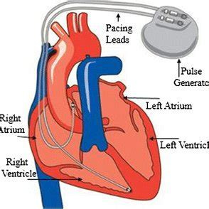

The implantable pacemaker is a life-sustaining Class III medical device used to manage cardiac arrhythmias. This portfolio offers an in-depth comparative regulatory study to evaluate how such a high-risk medical device is governed across three major global jurisdictions: the FDA (United States), the European Medical Device Regulation (MDR), and the Central Drugs Standard Control Organization (CDSCO, India).
This study encapsulates device classification rationale, documentation requirements, technical file preparation, conformity assessments, post-market surveillance, and unique regional compliance mandates.
